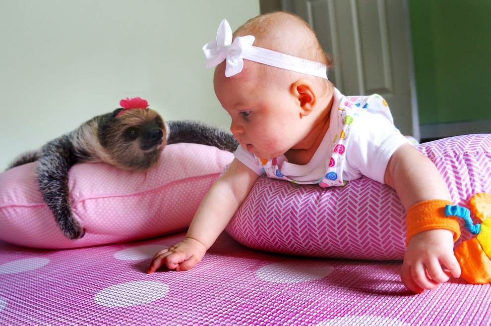
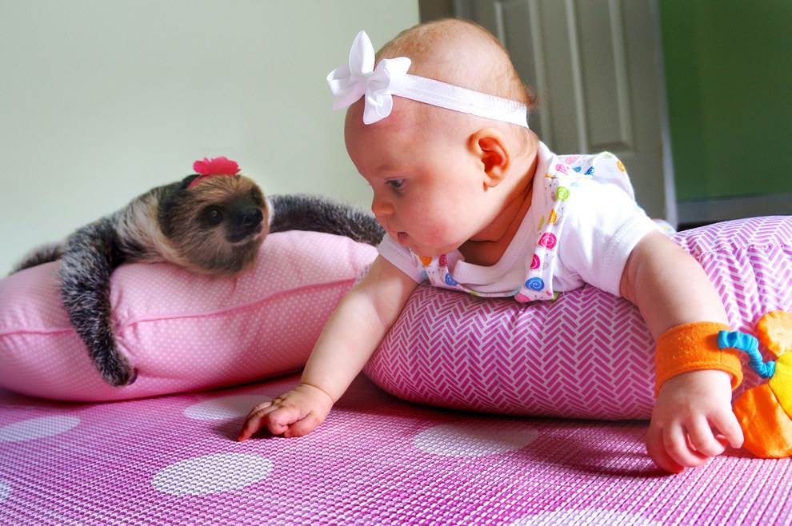

Our proprietary sloth acclimation process
It takes a lot to get a wild animal ready for life in domesticated captivity. That’s why you can trust the experienced team at SlothFinder to vet only the cutest, friendliest sloths from the rainforests of South America and train them to become the perfect pet for you!
 

PROCUREMENT
We source our Linnaeus’s two-toed sloths from the beautiful rainforests of Costa Rica, Ecuador, Peru and Guyana. They are hand-selected by our field ecologists according to key desirable characteristics such as temperament, arm cling strength and grin length.
PREPARATION
The lucky sloths are transported to specialized facilities geared toward preparing them for home life with their new families. These “Sloth Spas” promote an idyllic atmosphere for sloths to unwind and let it all hang out before they encounter the more hectic home environment.
HOME DELIVERY
We deliver your pet sloth with our signature white-glove service, via an ecological courier / handler. Our handy instruction manual ensures instant seamless integration of your new pet into your household activities. Ask us about our suggested baby bonding exercises!